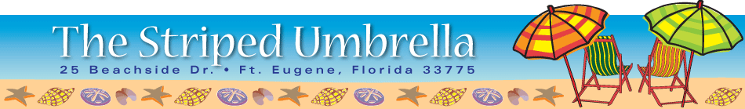
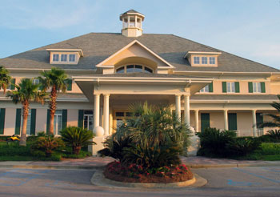
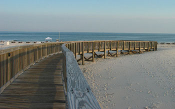

After you arrive, you will want to take a stroll down the boardwalk to the beach. The entrance to the boardwalk is just past the pool area. The boardwalk provides a safe route to the beach for both our guests and the native vegetation. The sea oats and other flora are tender. Please do not step on them or pick them. A lifeguard is on duty from 9:00 a.m. until sunset. Check the flag each time you head for the beach for the status of current swimming conditions and advisories. Jellyfish can be a problem at times, so be careful when you are walking along the beach, especially as the tide is retreating from high tide. We have beach chairs, umbrellas, and towels available to our guests. Check with the attendant on duty. Water, juices, and soft drinks are also available for purchase at the end of the boardwalk. Don't forget your sunglasses, hat, and sunscreen! A sunburn is sure way to ruin a nice vacation. The gift shop in The Club House is a convenient place to pick up any items that you may have forgotten to bring along, in addition to an extensive inventory of bathing suits, sandals, and other beachwear.